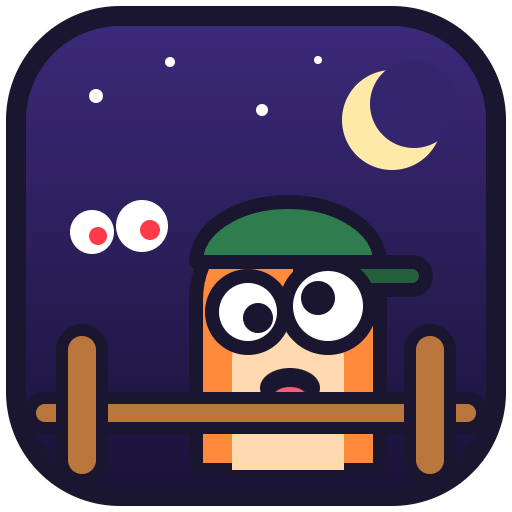
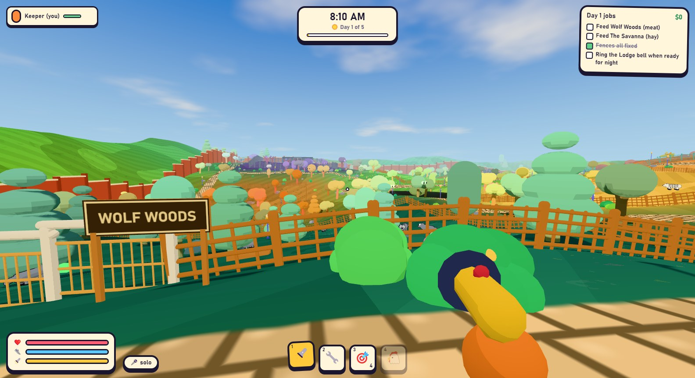
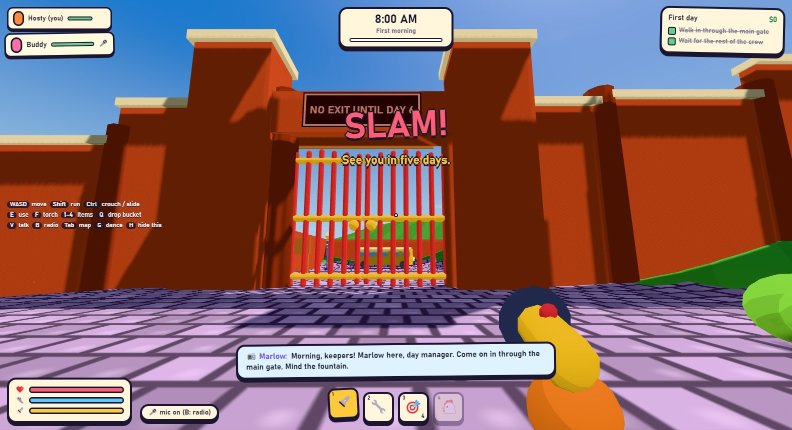
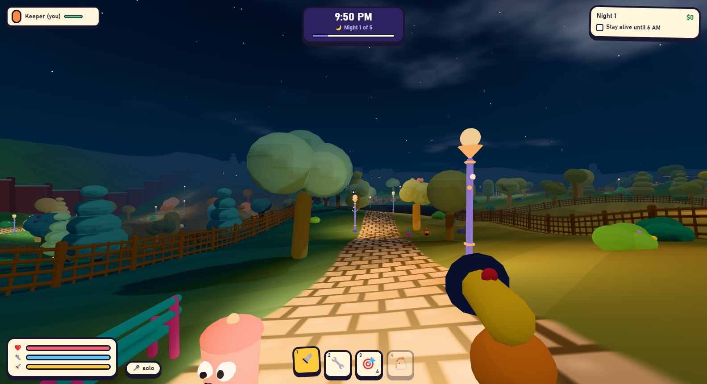
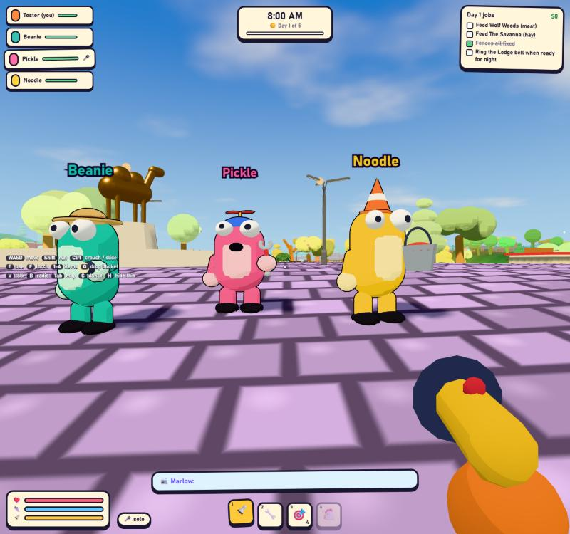
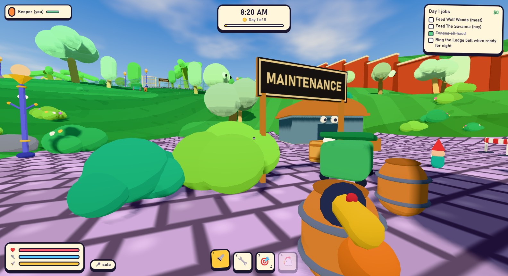

NIGHTSHIFTZOO
You and your friends walk into Cedar Hollow Zoo. The gates slam shut behind you. They open again in five days. Feed the animals, fix the fences, and don't get eaten.
Five days. Five nights.
The animals are ordinary by day. At night their eyes shine and they get ideas.
What's in the zoo
Keepers, all beans
Play with up to 3 friends using a room code. Everyone is a bean with a silly hat. No server to run.
Voice chat that looks silly
Push to talk, voice activation or always on. Talking beans pump up and down. Hold the radio key and the whole crew hears you.
Kinds of animal
Wolf packs, a bucket-stealing fox, charging bulls, clever raptors, a Yeti that only moves when nobody is looking, and the Rex.
Re-Bean-imators
Got eaten? A friend can bring you back at the glowing booths around the park. If everyone is eaten, the night starts again.
Enclosures
A big hilly park where every corner looks different, with 25 kinds of bean tree, a food court, a playground and a tower.
Secrets
Seven hidden gnomes, a golden camel, a squeaky chicken, a disco button and four different endings.
See the zoo

Bean trees, bean fences, and something watching from the bushes

See you in five days

Keep your torch charged

Mouths flap when you talk

Even the buildings and the bins
Play Night Shift Zoo
Free for Windows 10 and 11 through the Camel Client. On a Chromebook? Play it in your browser, and in Chrome click Install in the address bar to add it to your shelf.
If Windows says "Windows protected your PC", click More info → Run anyway. That shows up because the app isn't signed yet. Best with 2 to 4 players; you can also practise alone.